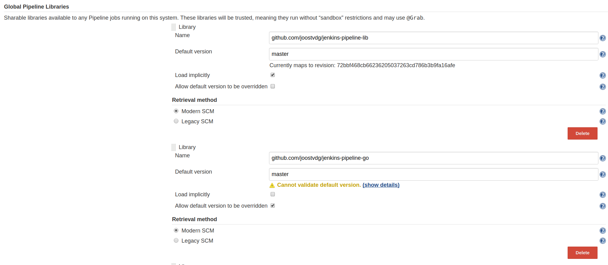

Global Shared Library¶
https://jenkins.io/doc/book/pipeline/shared-libraries/
When you're making pipelines on Jenkins you will run into the situation that you will want to stay DRY. To share pipeline code there are several ways.
- SCM: Have a pipeline dsl script in a SCM and load it from there
- Plugin: A Jenkins plugin that you can call via the pipeline dsl
- Global Workflow Library: There is a global library for pipeline dsl scripts in the Jekins master Preferred solution
Please read the documentation to get a basic idea.
Danger
When using a Global Library you will always have to import something from this library. This doesn't make sense when you online use functions (via the vars folder). In this case, you have to import nothing, which you do via: "_"
1 2 | @Library('FlussoGlobal') import nl.flusso.Utilities |
1 | @Library('FlussoGlobal') _ |
Library Directory structure¶
The directory structure of a shared library repository is as follows:
1 2 3 4 5 6 7 8 9 10 11 12 | (root) +- src # Groovy source files | +- org | +- foo | +- Bar.groovy # for org.foo.Bar class +- vars | +- foo.groovy # for global 'foo' variable/function | +- foo.txt # help for 'foo' variable/function +- resources # resource files (external libraries only) | +- org | +- foo | +- bar.json # static helper data for org.foo.Bar |
The src directory should look like standard Java source directory structure.
This directory is added to the classpath when executing Pipelines.
The vars directory hosts scripts that define global variables accessible from
Pipeline scripts.
The basename of each *.groovy file should be a Groovy (~ Java) identifier, conventionally camelCased.
The matching *.txt, if present, can contain documentation, processed through the system’s configured markup formatter
(so may really be HTML, Markdown, etc., though the txt extension is required).
The Groovy source files in these directories get the same “CPS transformation” as your Pipeline scripts.
A resources directory allows the libraryResource step to be used from an external library to load associated non-Groovy files.
Currently this feature is not supported for internal libraries.
Other directories under the root are reserved for future enhancements.
Configure libraries in Jenkins¶
The a Jenkins Master you can configure the Global Pipeline Libraries.
You can find this in: Manage Jenkins -> Configure System -> Global Pipeline Libraries
You can configure multiple libraries, where the there is a preference for Git repositories. You can select a default version (for example: the master branch), and either allow or disallow overrides to this.
To be able to use a different version, you would use the @
1 | @Library('FlussoGlobal@my-feature-branch') |

HelloWorld Example¶
- Create Git repository (see below for structure)
- Configure this Git repository as an "Global Pipeline Libraries" entry
- Name: FlussoGlobal
- Default Version: master
- Modern SCM: git
- Project repository: git@gitlab.flusso.nl:CICD/jenkins-pipeline-library.git
- Create the resources you want in the git repository
- Use the library in a pipeline
Util Class (class) Example¶
1 2 3 4 5 6 7 8 9 10 11 12 13 14 15 | #!/usr/bin/groovy #/src/nl/flusso/Utilities.groovy package nl.flusso import java.io.Serializable class Utilities implements Serializable { def steps Utilities(steps) {this.steps = steps} def sayHello(String name) { steps.sh "echo $name" } } |
1 2 3 4 5 6 7 8 9 | @Library('FlussoGlobal') import nl.flusso.Utilities def utils = new Utilities(steps) node { String name = 'Joost' utils.sayHello(name) } |
Util method (var) Example¶
1 2 3 4 5 6 | #!/usr/bin/groovy #/vars/sayHello.groovy def call(name) { // you can call any valid step functions from your code, just like you can from Pipeline scripts echo "Hello world, ${name}" } |
1 2 3 4 5 | @Library('FlussoGlobal') _ node { String name = 'Joost' sayHello name } |
Combining libraries¶
Lets say you want to want to have a core library and multiple specific libraries that utilize these. There are several to do this, we will show two.
Import both¶
One way is to explicitly import both libraries in the Jenkinsfile.
1 | @Library(['github.com/joostvdg/jenkins-pipeline-lib','github.com/joostvdg/jenkins-pipeline-go']) _ |
Con:
- you have to import all the required libraries yourself
Pro:
- you can specify the versions of each
Implicit Import + Explicit Import¶
You can also configure the core (in this case jenkins-pipeline-lib) as "loaded implicitly". This will make anything from this library available by default.
Be careful with the naming of the vars though!
The resulting Jenkinsfile would then be.
1 | @Library('github.com/joostvdg/jenkins-pipeline-go') _ |